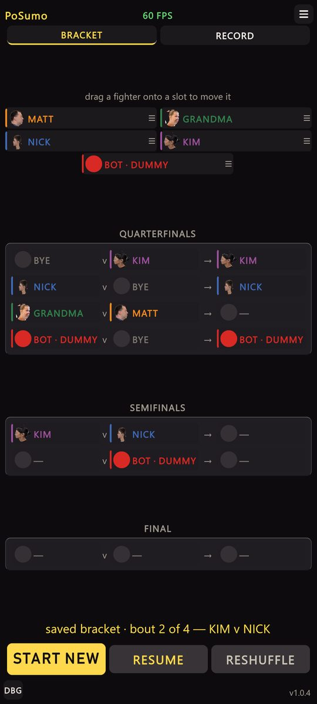
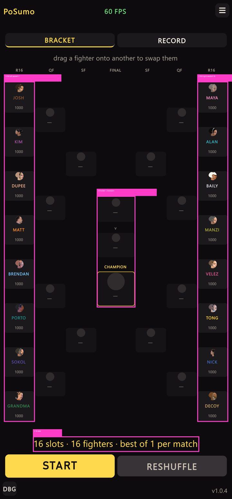
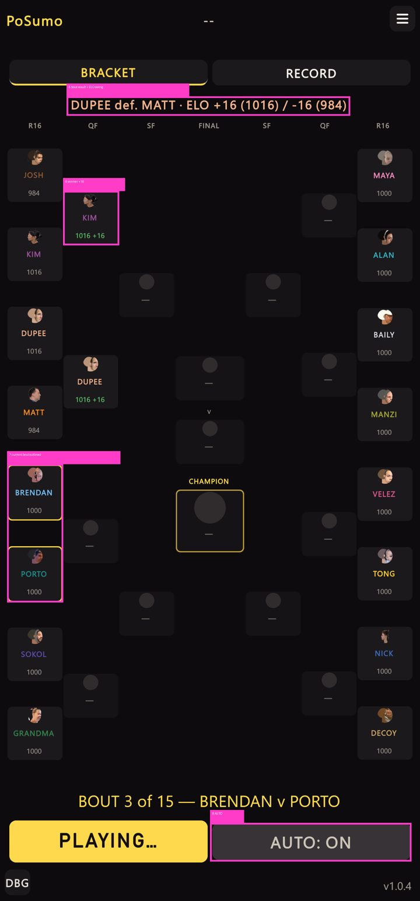
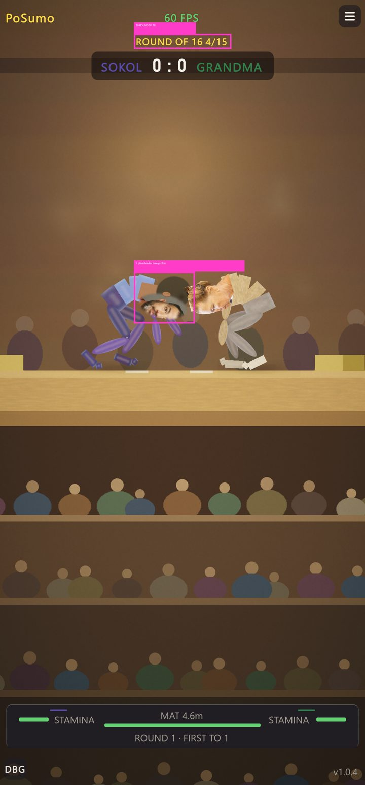

Tournament bracket: 4 → 16 slots
2026-11-10 · PoSumo · captured live in Play mode at 1440×3088 (portrait) from SCN_TOURNAMENT.
Before / after


After — running and in a bout


What changed (numbers match the pink marks)
- 1–2 Eight seeds down each edge; each column one round further in. Columns use
SpaceAround, so every winner chip sits exactly between its two feeders. - 3 The final sits in the centre: left finalist, “v”, right finalist, then the champion in a gold frame.
- 4 Status reads 16 slots / 16 fighters. The drag palette is gone — every fighter is always seeded; drag one seed onto another to swap.
- 5 After each bout: “WINNER def. LOSER · ELO +N (new) / −N (new)” — the separate tournament Elo.
- 6 Every chip shows tournament Elo; a decided bout’s winner chip shows the points it took, in green.
- 7 The two chips of the bout about to be played are outlined in gold.
- 8 START plays the whole bracket unattended (AUTO toggle unchanged).
- 9 Placeholder fighters fight with a fake right-facing profile cut from a front photo; expressions are procedural tint/squash/tilt.
- 10 Round names now cover ROUND OF 16 / QUARTERFINAL / SEMIFINAL / FINAL.